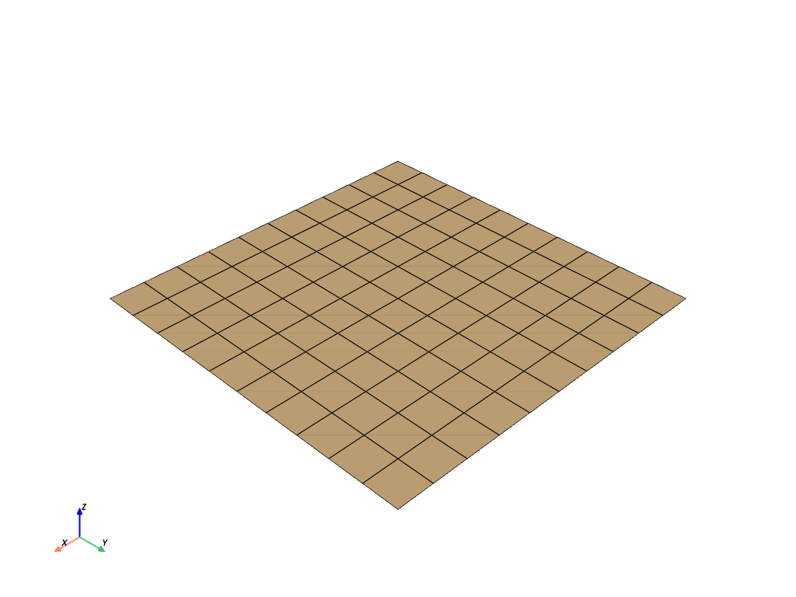

Plane#
- Plane(center=(0, 0, 0), direction=(0, 0, 1), i_size=1, j_size=1, i_resolution=10, j_resolution=10)[source]#
Create a plane.
- Parameters
- center
listortupleornp.ndarray Location of the centroid in
[x, y, z].- direction
listortupleornp.ndarray Direction of the plane’s normal in
[x, y, z].- i_size
float Size of the plane in the i direction.
- j_size
float Size of the plane in the j direction.
- i_resolution
int Number of points on the plane in the i direction.
- j_resolution
int Number of points on the plane in the j direction.
- center
- Returns
pyvista.PolyDataPlane mesh.
Examples
Create a default plane.
>>> import pyvista >>> mesh = pyvista.Plane() >>> mesh.point_data.clear() >>> mesh.plot(show_edges=True)
